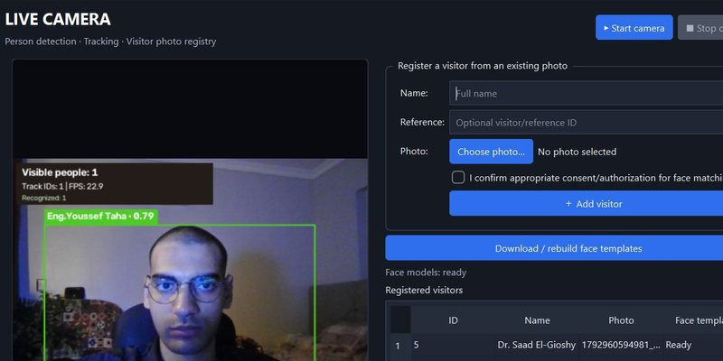
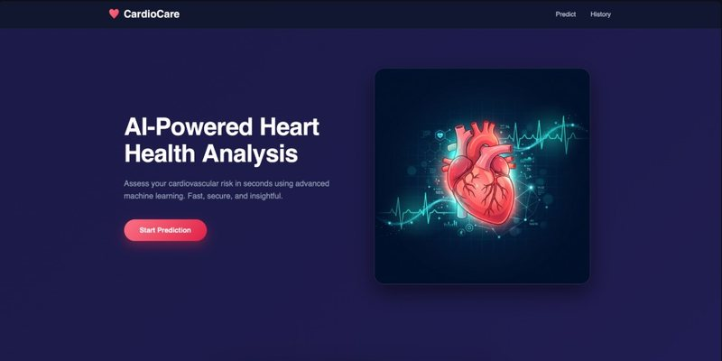
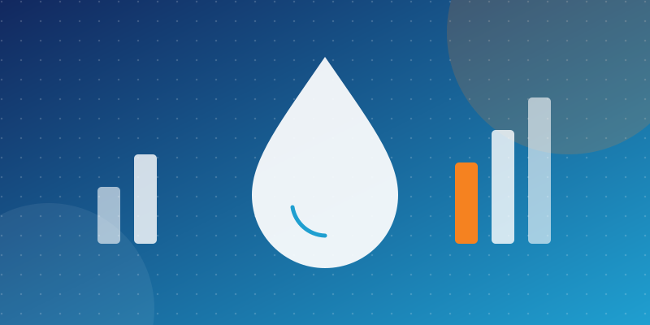
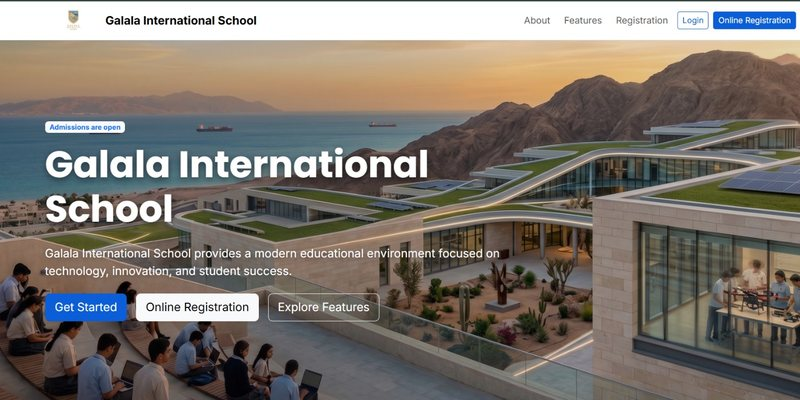
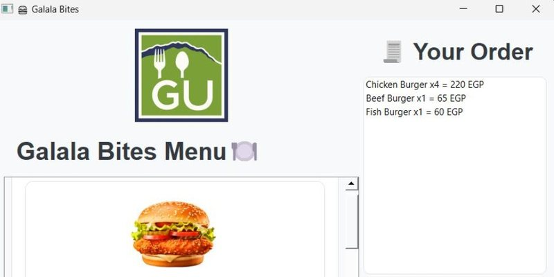

AI Engineer
Youssef Taha
Translating data into actionable insights & business success.
About
I am an AI engineer and a third-year Artificial Intelligence student at Galala University. I build machine learning models and turn raw data into dashboards and decisions people can act on. I also teach AI and data, which keeps my own fundamentals sharp.
- 6+ML & full-stack projects
- 8Certifications & courses
- 2Roles: instructor & ML trainee
Skills
Data & BI
Power BI, data modeling, dashboards, storytelling with data.
Machine Learning
Python, model training and evaluation, applied AI.
Cloud
Microsoft Azure for data and ML workloads.
Experience & Education
- AI & Data InstructorIHSS · Sep 2026 – Present
Teaching artificial intelligence and data fundamentals to students.
- Microsoft Machine Learning Engineer TraineeDigital Egypt Pioneers Initiative (DEPI) · Jul 2026 – Present
Machine learning workflows, Azure AI tools, NLP, computer vision and MLOps on Microsoft's track.
- Aspire Leaders ProgramHarvard University · Oct – Dec 2025
Leadership and business and social skills program founded at Harvard in 2017. Leadership and networking.
- Machine Learning InternNTI Summer Internship · Aug – Sep 2025
Predictive models, feature engineering, PCA and GMM, neural networks, and cloud deployment of end-to-end ML projects.
- Sustainable Development TrainingMinistry of Planning, Economic Development & International Cooperation · Sep – Oct 2024
"Be an Ambassador for Sustainable Development" program: the 17 UN SDGs, community leadership, innovative thinking and networking.
- BSc, Computer Science & Engineering (Artificial Intelligence)Galala University · Sep 2024 – Present
Specializing in AI, 3rd year.
Projects

AI Vision & People Analytics
Desktop app that detects and tracks people from a webcam with YOLO11 and ByteTrack, recognizes registered visitors, and shows live occupancy stats with Excel/CSV export.
Python · YOLO11 · OpenCV · SQLite
Heart Disease Prediction System
Clinical ML system predicting heart disease risk. Benchmarks five models, tunes with GridSearchCV, evaluates with ROC-AUC, and serves real-time predictions through a Flask app.
Python · Flask · scikit-learn
Diabetes Prediction System
Predicts diabetes risk from patient health data. Covers preprocessing, feature engineering, EDA, and comparison of several classifiers. Handles class imbalance with SMOTE.
Python · Random Forest · SMOTE
School Information System
Full-stack management platform for Galala International School with admin, teacher and student dashboards, a Gemini-powered SQL assistant, Chart.js analytics and email workflows.
Flask · MySQL · Gemini APILocal Farmers Market Aggregator
Multi-role marketplace connecting local farmers with buyers: carts, orders, reviews, admin analytics, Flask Blueprints and a normalized MySQL schema.
Flask · MySQL · JavaScript
Restaurant Ordering System
Full-stack restaurant ordering and management platform with menu and order management and MySQL persistence.
Python · MySQLContributions
Certifications
- AWS Academy Graduate, Data EngineeringAmazon Web Services · Jan 2026
- Getting Started with Deep LearningNVIDIA · Sep 2025
- AWS Educate Machine Learning FoundationsAmazon Web Services · Jun 2025
- Introducing Generative AI with AWSUdacity & AWS · Jun 2025
- Artificial Intelligence FundamentalsIBM SkillsBuild · Apr 2025
- Introduction to Programming Using PythonAIIB · Apr 2025
Also: Machine Learning Specialization (DeepLearning.AI) and CS50 (Harvard). Currently learning PyTorch, LLMs and MLOps.
Volunteering & Leadership
Web Development Specialist
MENA Hackathons
Apr – Sep 2026Operational Specialist
Galala Rally Society
Jan – Oct 2026Coordinator
EYE, Ministry of Youth and Sports of Egypt
Aug 2024 – Jan 2025Let's work together
Open to AI, data and BI opportunities.